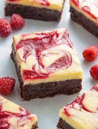
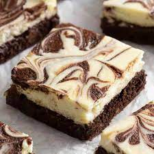

White Brownie
A white brownie, also known as a blondie, is a rich, sweet dessert bar. It resembles the traditional chocolate brownie, but is made without the cocoa powder, resulting in a light-colored treat with a butterscotch-like flavor.
Oreo Brownie

An Oreo brownie is a chocolate brownie that is mixed with crushed Oreo cookies. The combination of rich chocolate and crunchy Oreo pieces creates a delicious and indulgent dessert that is sure to satisfy your sweet cravings.
Cheese Brownie
A cheese brownie is a variation of the traditional chocolate brownie that includes cream cheese in the batter. This addition creates a creamy and tangy flavor that complements the rich chocolate, making it a unique and flavorful dessert option.